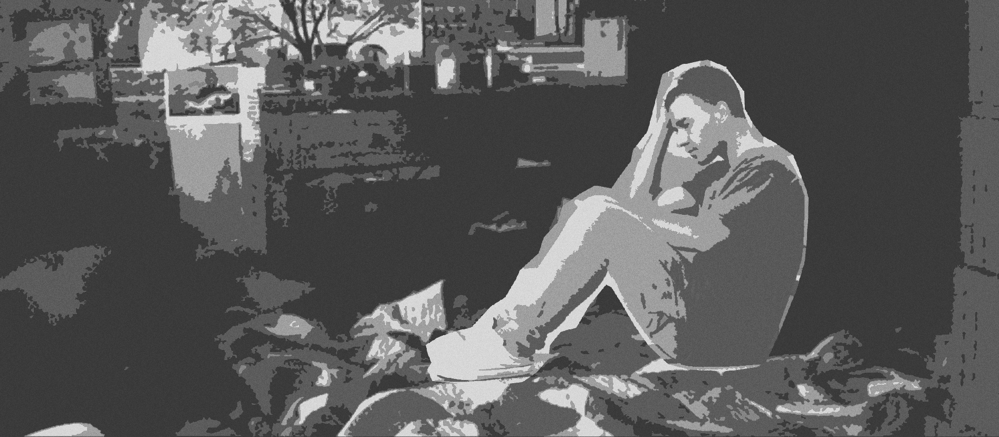
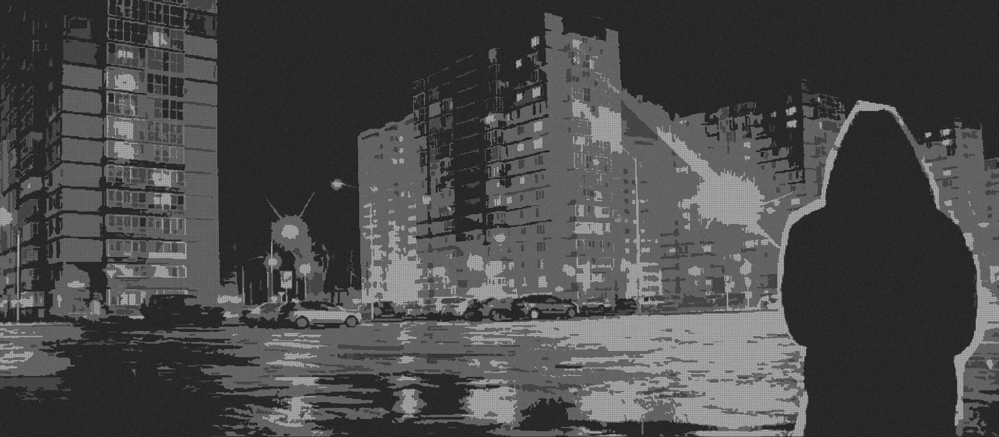

ТЁМНЫЕ БЕСКРАЙНИЕ
Автор: Ваше Имя
Пролог
Тьма сгущалась над городом, поглощая последние лучи заката. В этом предисловии я хочу провести вас через те мысли и переживания, которые легли в основу этой истории. Это не просто книга — это путешествие в глубины человеческой души.
Каждая глава — новый слой реальности, который мы будем вместе исследовать. Современный ритм повествования сочетается здесь с вечными темами, которые тревожат нас под покровом ночи.
Глава 1: Полночный город
Город никогда не спит — это ложь. В три часа ночи наступает момент абсолютной тишины, когда даже неоновые огни кажутся приглушёнными. Именно в этот час я впервые увидел Его.
Тени на стенах двигались неестественным образом, будто жили собственной жизнью. Воздух был насыщен электричеством предгрозового напряжения, хотя метеорологи не предсказывали осадков.
Мои часы показывали 3:07, когда все уличные фонари на набережной погасли одновременно. Не постепенно, не мигая — просто в один момент свет исчез, оставив после себя плотную, почти осязаемую тьму.
Глава 2: Зов бездны

С тех пор как начались видения, сон стал для меня чужим городом, куда я не мог вернуться. Врачи разводили руками, антидепрессанты лишь усиливали яркость образов.
Особенно чётко я видел его лицо — точнее, то, что должно было быть лицом. Гладкая, без черт, поверхность, отражающая моё собственное искажённое отражение. Оно приходило ровно в 3:14 ночи и стояло в ногах кровати, пока я не терял сознание от ужаса.
Аудиоверсия книги
Озвучено профессиональным актёром
Погрузитесь в атмосферу "Тёмных бескрайних" с нашей аудиоверсией. Профессиональная озвучка, музыкальное сопровождение и звуковые эффекты создадут полное ощущение присутствия в описываемых событиях.
Сейчас играет: Пролог
Главы:
Отзывы читателей
Отзывы временно недоступны
Архив рассказов
Коллекция лучших произведений
Последний поезд в Бобруйск
Поезд №742 замедлял ход, приближаясь к полустанку. В окне мелькали редкие огни, далёкие и равнодушные, как звёзды над пустыней. Я знал, что этого поезда не существует в расписании, но почему-то оказался в его вагоне, среди теней, которые когда-то были людьми.
Кондуктор в форме сороковых годов прошлого века проверял билеты. Его лицо было странно размыто, будто смазано на старой фотографии. Когда он подошёл ко мне, я понял, что мой билет недействителен...
Кондуктор протянул руку - его пальцы были неестественно длинными, почти доходили до моих колен. "Ваш билет," - произнёс он голосом, который звучал как скрип несмазанных колёс.
Я полез в карман и с ужасом осознал, что держу в руках не современный электронный билет, а пожелтевший бумажный листок с печатью 1943 года. На нём было написано моё имя, но дата отправления... дата отправления была сегодняшней.
Когда я поднял глаза, кондуктор уже шёл дальше по вагону. За окном мелькнула табличка "Бобруйск", но я точно знал - этого города на нашем маршруте быть не должно...
Кассиопея над свалкой
Мы сидели на крыше заброшенного завода, разглядывая звёзды сквозь смог городской свалки. Водка была дешёвой, но звёзды — настоящими. Именно тогда Васька указал пальцем на Кассиопею и сказал: "Она мигает не так".
Сначала мы не поняли, о чём он. Но через неделю Васька исчез. А ещё через месяц я нашёл его дневник в развалинах того самого завода. Последняя запись гласила: "Они не звёзды. Они глаза. И они смотрят..."
Я открыл дневник на последней странице. Бумага была влажной и пахла ржавчиной. Почерк Васьки, обычно такой размашистый и уверенный, здесь дрожал, буквы сползали вниз, как будто он писал в темноте или в состоянии крайнего ужаса.
"Они выбрали меня сегодня ночью. Сначала думал — галлюцинации от палёной водки. Но когда Кассиопея разомкнула свои звёзды как веки, я понял — это не галлюцинации. Они всегда были там. Просто теперь решили показаться."
На обороте последнего листа была нарисована странная схема — не созвездие, а скорее траектория, ведущая от нашей свалки куда-то за пределы карты. И подпись: "Они ждут на старом месте. 3:17 ночи. Не смотри вверх."
Графеновые сны
Когда мне вживили первый графеновый нейрочип, врачи предупредили о возможных побочных эффектах: головные боли, тошнота, дезориентация. Никто не сказал мне о главном — чип начал записывать мои сны.
Сначала это было забавно — проснуться и посмотреть запись своего сна, как фильм. Пока в одну из ночей я не увидел во сне лабораторию, где мне вживляли этот чип. На операционном столе лежал не я. И "врачи" не были людьми...
Я пересматривал запись снова и снова. На операционном столе лежало... нечто с моим лицом, но тело было слишком длинным, суставы сгибались в неправильных местах. "Врачи" вокруг стояли неподвижно, их белые халаты скрывали нечеловеческие пропорции.
Один из них повернулся к камере — вернее, к точке, откуда велась запись. Его глаза были сплошными чёрными сферами. "Не волнуйся, — сказал он голосом, который я узнал как свой собственный. — Скругление углов пройдёт. Ты привыкнешь к новой форме."
На следующее утро я обнаружил на запястье шрам, которого не было вчера. А когда посмотрел в зеркало, мне показалось, что мои зрачки стали чуть больше, чем должны быть...